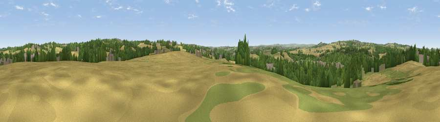

Viewpoint near Renishaw
#28509 in England · top 46% of its area beats it · near RenishawWhere it is
The exact computed spot (SK 44775 77175). Click the marker for map links.
The view, rendered

A 360° render of this exact spot computed from the terrain model, tree cover and land cover — summer colours, afternoon light, calibrated against photographs of famous viewpoints. Real trees, hedges and buildings will differ in detail.
The panorama
Grey silhouette: terrain skyline in each direction (720 bearings, Earth curvature and refraction included). Dashed green: skyline with trees (+15 m) and buildings (+8 m) as obstacles. Blue strip: how far the ground is visible on each bearing.
Where the view opens
Wedge length = distance to the farthest visible ground on that bearing (vegetation-aware). Rings at 10, 25 and 50 km.
What fills the view
37% cropland · 27% woodland · 26% grassland · 9% built-up
Angular shares of the visible panorama (visual magnitude), not map area. Landscape diversity 0.57 (0–1 Shannon).
Key numbers
More beautiful places nearby
The staircase of upgrades: each row has a higher view potential than everything closer. Driving times are estimates from straight-line distance, calibrated against real road routing — check an actual route before setting out.
| Place | Direction | Drive | Score |
|---|---|---|---|
| Viewpoint near Killamarsh | N · 3 km | ~7 min | 43.0 |
| Viewpoint near Killamarsh | NNE · 4 km | ~10 min | 45.9 |
| Viewpoint near Shuttlewood | SSE · 5 km | ~10 min | 53.3 |
| Viewpoint near Marsh Lane | WNW · 5 km | ~11 min | 53.8 |
| Viewpoint near Hundall | W · 6 km | ~13 min | 54.1 |
| Viewpoint near Bolsover | SSE · 7 km | ~14 min | 60.4 |
| Viewpoint near Ridgeway | NW · 7 km | ~14 min | 67.6 |
| Viewpoint near Holmesfield | W · 16 km | ~28 min | 69.4 |
53.28966, -1.32979 · source: screening · position refined by local search. Computed location — check access rights before visiting.